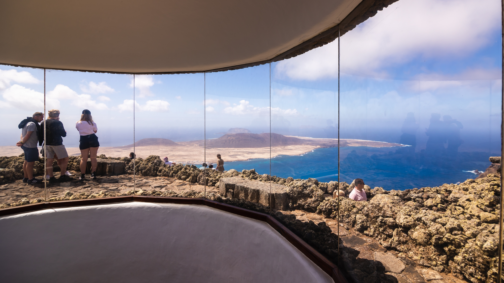

Nuestros destinos
Hotel Atlantic Paradise - Playa Blanca, Lanzarote.
En la idílica isla de Lanzarote, el encanto de Playa Blanca se despliega como un tesoro costero, ofreciendo a los visitantes una experiencia única en medio de paisajes impresionantes y aguas cristalinas. Este destino, anidado en la costa sur de la isla, se erige como un refugio de serenidad y belleza natural que promete relajación y aventuras inolvidables. Playa Blanca debe su nombre a las extensas playas de arena fina que se extienden a lo largo de su costa. El resplandor dorado de la arena contrasta armoniosamente con las aguas turquesas del océano Atlántico, creando un telón de fondo impresionante que invita a los visitantes a sumergirse en su serenidad.
Paseos marítimos y naturaleza.
Playa Blanca no solo es un deleite para los amantes de la playa, sino también para aquellos
que disfrutan de paseos marítimos pintorescos y elegantes puertos. La Marina Rubicón, con su
arquitectura encantadora y una variedad de tiendas y restaurantes, ofrece a los visitantes una
experiencia costera inigualable. Los paseos al atardecer a lo largo de la costa, con vistas
panorámicas al océano y la vecina isla de Fuerteventura, son un pasatiempo favorito entre los visitantes.
En las cercanías, los Arrecifes de Papelillos atraen a los amantes del snorkel y el buceo, revelando
un fascinante mundo submarino de vida marina colorida y formaciones rocosas únicas. Además, el Parque
Nacional de Timanfaya, con su paisaje lunar y vistas impresionantes, ofrece una escapada natural para
aquellos que buscan explorar la belleza volcánica de Lanzarote.
Gastronomía y cultura.
Los restaurantes a lo largo de su paseo marítimo y en la Marina Rubicón sirven delicias locales e internacionales,
fusionando sabores frescos con la riqueza de la cultura canaria. La hospitalidad cálida y acogedora de los lugareños
complementa perfectamente la experiencia gastronómica.
En resumen, Playa Blanca, Lanzarote, se revela como un
destino que encanta a los viajeros con su combinación única de belleza natural, elegancia costera y autenticidad isleña.
Ya sea sumergiéndose en aguas cristalinas, explorando los tesoros naturales cercanos o simplemente relajándose en la orilla,
este rincón paradisíaco ofrece una escapada que perdura en la memoria mucho después de haber dejado su arena dorada. Aquí les
dejamos varias imágenes de la isla.


- 


Hotel Resort Maspalomas - Maspalomas, Gran Canaria.
En la vibrante isla de Gran Canaria, Maspalomas se alza como un destino singular que cautiva a los viajeros con su mezcla única de playas doradas, dunas imponentes y una rica oferta de actividades y entretenimiento. Este rincón paradisíaco, ubicado en la costa sur de la isla, se ha ganado merecidamente su lugar como un refugio de belleza natural y diversión.
Naturaleza y paisaje.
El distintivo paisaje de Maspalomas está definido por sus majestuosas dunas, que se extienden a lo
largo de varios kilómetros a lo largo de la costa. Estas formaciones arenosas, modeladas por el
viento a lo largo de los siglos, crean una ilusión de desierto que sorprende a quienes llegan a este
rincón canario. Los visitantes pueden disfrutar de paseos camellos entre las dunas, sumergiéndose en
la sensación única de un oasis atlántico en pleno corazón de Gran Canaria.
La Playa de Maspalomas,
que se extiende a lo largo de la costa, es un paraíso costero que combina la suavidad de la arena fina
con las aguas apacibles del océano Atlántico. Perfecta para disfrutar del sol canario, esta playa ofrece
un ambiente relajado y familiar, ideal para nadar, practicar deportes acuáticos o simplemente descansar
junto al mar.
A poca distancia de la playa se encuentra la Charca de Maspalomas, un humedal
que sirve como refugio para aves migratorias y fauna local. Este santuario de vida natural ofrece
a los visitantes la oportunidad de observar aves exóticas en su hábitat natural y apreciar la riqueza de la biodiversidad de la región.
Entretenimiento y vida nocturna.
San Fernando, la zona comercial y de entretenimiento de Maspalomas, agrega un toque animado a la experiencia. Sus calles
empedradas albergan una variedad de tiendas, restaurantes y bares, donde la música y el bullicio crean un ambiente
alegre. Los visitantes pueden explorar mercados locales, probar la cocina canaria y sumergirse en la autenticidad
de la vida isleña.
Maspalomas cobra vida cuando cae la noche, con una vibrante vida nocturna que atrae
a residentes y visitantes por igual. Los clubes y bares a lo largo de la costa ofrecen desde música en vivo
hasta espectáculos de entretenimiento, creando una atmósfera animada y acogedora.
En resumen, Maspalomas,
Gran Canaria, se presenta como un destino donde la naturaleza, la diversión y la autenticidad se fusionan en armonía.
Ya sea explorando las dunas, disfrutando del sol en la playa, observando aves en la Charca o sumergiéndose en la vida
nocturna, este rincón de Gran Canaria promete una experiencia que combina relajación y emociones inolvidables. Aquí les
dejamos varias imágenes de la zona de Maspalomas.


Hotel Enjoy Island - Costa Calma, Fuerteventura.
En la encantadora isla de Fuerteventura, Costa Calma destaca como un rincón sublime que invita a los viajeros a sumergirse en la serenidad atlántica. Con playas inmaculadas, aguas turquesas y una atmósfera relajada, este destino se erige como un refugio paradisíaco para aquellos que buscan escapar del bullicio y abrazar la belleza natural.
Paisajes de ensueño.
Costa Calma justifica su nombre con creces, ofreciendo extensas playas de arena dorada que se extienden
a lo largo de la costa. Las aguas cristalinas del océano Atlántico acarician suavemente la orilla,
creando un escenario perfecto para relajarse, practicar deportes acuáticos o simplemente disfrutar
del sol canario. Playas como Sotavento y Risco del Paso son puntos destacados que deleitan a los
visitantes con su encanto natural.
En las cercanías de Costa Calma, el Parque Natural de
Jandía despliega su paisaje montañoso y senderos escénicos. Los amantes del senderismo pueden
aventurarse a explorar este entorno único, descubriendo vistas panorámicas, fauna autóctona y una
sensación de conexión con la naturaleza que caracteriza a Fuerteventura.
Actividades acuáticas.
Costa Calma se ha ganado una reputación como uno de los destinos predilectos para los amantes del windsurf y kitesurf. Los vientos constantes y las condiciones ideales hacen de estas playas el lugar perfecto para deslizarse sobre las olas o elevarse en el cielo con una cometa. Escuelas especializadas ofrecen clases para principiantes y expertos, asegurando una experiencia emocionante y segura.
Bienestar y relax.
La cercana localidad de Pájara, con su encanto tradicional, ofrece una opción ideal para disfrutar de
las noches en Costa Calma. Restaurantes locales sirven delicias canarias, permitiendo a los visitantes
saborear la auténtica gastronomía de la región mientras disfrutan de la tranquila atmósfera de este pueblo
pintoresco.
Costa Calma se ha convertido también en un enclave para el bienestar y la relajación.
Numerosos centros de spa y yoga ofrecen programas rejuvenecedores que permiten a los visitantes desconectar
y rejuvenecer mientras escuchan el suave murmullo del océano Atlántico.
En resumen, Costa Calma
en Fuerteventura se presenta como un destino donde la naturaleza virgen se entrelaza con la aventura y el relax.
Con sus playas acogedoras, emocionantes deportes acuáticos y la posibilidad de conectar con la autenticidad de la isla,
este rincón canario promete una experiencia que deja huellas duraderas en el corazón de quienes lo visitan. Aquí les dejamos varias imágenes de la isla.


Hotel Juncalillo - Los Cristianos, Tenerife.
En la costa sur de la cautivadora isla de Tenerife, se encuentra el pintoresco pueblo de Los Cristianos, un enclave que fusiona la autenticidad canaria con el encanto del océano Atlántico. Este destino, inicialmente un pequeño pueblo pesquero, ha evolucionado para convertirse en un lugar emblemático que ofrece una mezcla única de tradición, modernidad y una vista impresionante al mar.
Historia pesquera y tradición marinera.
Los Cristianos tiene sus raíces en la actividad pesquera que definió su historia. A pesar de su crecimiento y desarrollo, el pueblo ha mantenido su esencia tradicional, visible en las coloridas barcas pesqueras que aún salen a faenar en el Atlántico. Los visitantes pueden explorar el puerto y maravillarse con la habilidad de los pescadores locales, cuyas tradiciones se han transmitido de generación en generación.
Increible paseo marítimo.
El paseo marítimo de Los Cristianos es un lugar donde el bullicio del mercado se mezcla con el suave
murmullo de las olas. Este animado espacio, bordeado de palmeras y tiendas locales, invita a los visitantes
a pasear mientras disfrutan de las vistas al mar y se sumergen en la animada atmósfera. La Playa de Los
Cristianos, con su arena dorada y aguas cristalinas, ofrece un escenario perfecto para disfrutar del sol y la brisa marina.
El puerto de Los Cristianos, con sus servicios de ferry, se ha convertido en un punto crucial de conexión entre Tenerife y
otras islas del archipiélago. Desde aquí, los visitantes pueden embarcarse en travesías emocionantes a lugares como La Gomera
y El Hierro, añadiendo una dimensión aventurera a su estancia.
Gastronomía local.
La oferta gastronómica en Los Cristianos refleja su herencia pesquera. Los restaurantes a lo largo del paseo marítimo sirven delicias frescas del mar, desde pescados y mariscos hasta platos tradicionales canarios que resaltan los sabores locales. Los visitantes pueden disfrutar de una auténtica experiencia culinaria mientras se deleitan con las vistas al océano.
Vida nocturna y ocio
Al caer la noche, Los Cristianos se transforma en un escenario vibrante con una animada vida nocturna. Bares y clubes locales
ofrecen música en vivo y entretenimiento, invitando a residentes y turistas a disfrutar del ritmo canario en un ambiente acogedor.
En resumen, Los Cristianos en Tenerife se presenta como un destino donde la historia marinera se encuentra con la modernidad costera.
Con su encanto pesquero, playas relajantes y una mezcla de tradición y contemporaneidad, este pueblo ofrece a los visitantes una
experiencia única que celebra la autenticidad de la isla y la belleza del Atlántico. Aquí les dejamos varias imágenes de la isla.


Hotel Serenity I - Meloneras, Gran Canaria.
En la pintoresca costa sur de Gran Canaria, Meloneras se alza como un destino que combina a la perfección la elegancia moderna con la belleza natural del entorno. Este enclave costero, conocido por su ambiente exclusivo y servicios de alta calidad, invita a los visitantes a disfrutar de un retiro de lujo entre dunas doradas y el azul sereno del océano Atlántico.
Paisajes costeros.
El paseo marítimo de Meloneras se erige como el corazón de la sofisticación en la isla. Líneas limpias,
palmeras altas y una arquitectura refinada definen este espacio donde los visitantes pueden disfrutar de
paseos relajantes frente al mar. Tiendas de diseño, boutiques de lujo y restaurantes con vistas panorámicas
añaden un toque exclusivo a esta zona, creando una atmósfera perfecta para quienes buscan experiencias de alto nivel.
Meloneras comparte su línea costera con el icónico Faro de Maspalomas, una estructura majestuosa que ofrece vistas
espectaculares del Atlántico y las dunas cercanas. Ascender al faro al atardecer brinda una perspectiva única y
romántica de la costa, con el sol pintando el cielo de tonos cálidos mientras se sumerge en el océano.
La playa de Meloneras es sinónimo de exclusividad y relajación. Con su arena dorada y aguas tranquilas, ofrece
un refugio tranquilo para aquellos que buscan disfrutar del sol y el mar en un ambiente más distinguido. Los
clubes de playa privados proporcionan servicios exclusivos, desde cócteles frente al océano hasta cenas gourmet con vistas al atardecer.
Actividades de la zona.
Para los amantes del golf, Meloneras ofrece un oasis verde en forma de su prestigioso campo de golf. Este campo, con su diseño escénico y desafiantes hoyos, no solo proporciona una experiencia deportiva de calidad, sino que también ofrece vistas impresionantes del paisaje circundante, desde las dunas hasta el horizonte marino.
Spa y relajación.
Meloneras también se destaca por sus lujosos centros de bienestar y spa. Aquí, los visitantes pueden sumergirse en
tratamientos rejuvenecedores, relajarse en instalaciones de clase mundial y disfrutar de un ambiente sereno que complementa
la belleza natural del entorno.
En resumen, Meloneras, Gran Canaria, ofrece una experiencia de lujo que combina la
elegancia moderna con la belleza natural del Atlántico. Ya sea disfrutando de un paseo frente al mar, jugando al golf en un
entorno idílico o relajándose en las playas exclusivas, este rincón de la isla invita a los viajeros a sumergirse en un mundo
de sofisticación y serenidad. Aquí les dejamos varias imágenes de la zona.